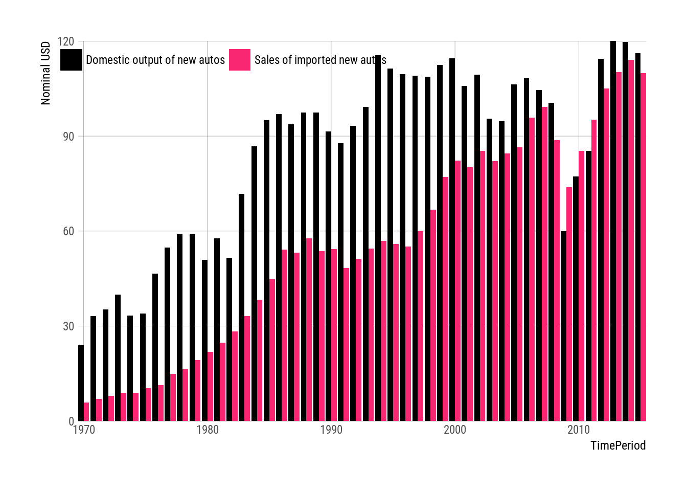

file.apiKey.enc <- system.file("apiKey.R.gpg", package = "nsoApi")
nsoApi::nsoApiGPG(file = file.apiKey.enc,
gpg = NULL,
passphrase = Sys.getenv("NSOAPIGPG"),
keep = FALSE
)## [1] TRUEapi.param <- list(
DATASETNAME = "NIPA",
FREQUENCY = "A",
METHOD = "GETDATA",
RESULTFORMAT = "JSON",
USERID = apiKey$BEA$userid,
TABLEID = "272", # Table 7.2.5B. Motor Vehicle Output (A) (Q)
YEAR = "X" # restrict time period to 1970 onwards
)
datalist <- beaAPI(api.param = api.param, curl = curl)
## knitr::kable(datalist$BEAAPI$Results$Data)
df <- datalist$BEAAPI$Results$Data
## head(df)
## unique(df$LineDescription)library(ggplot2)
library(hrbrthemes)
p <-
df %>%
filter(LineDescription %in% c("Domestic output of new autos",
"Sales of imported new autos") &
TimePeriod %in% seq(1970, 2015, 1)) %>%
mutate(DataValue = as.numeric(DataValue),
TimePeriod = as.Date(paste0(TimePeriod, "-01-01"))) %>%
ggplot(aes(x = TimePeriod, y = DataValue, fill = LineDescription)) +
geom_bar(stat = "identity", position = "dodge"
## , alpha = 0.8
) +
scale_x_date(expand=c(0,0)) +
scale_y_comma(name = "Nominal USD",
expand=c(0,0)) +
## theme_bw() +
theme_ipsum_rc(grid="XY") +
## rgb(249, 38, 114, maxColorValue = 255)
scale_fill_manual(values = c("black", "#F92672")) +
guides(fill = guide_legend(title = NULL)) +
theme(legend.position=c(0.25, 0.95),
legend.direction = "horizontal") # +
## theme(legend.position = "top")
p
## bea_xts <- beaDFtoXTS(df)
## head(bea_xts)